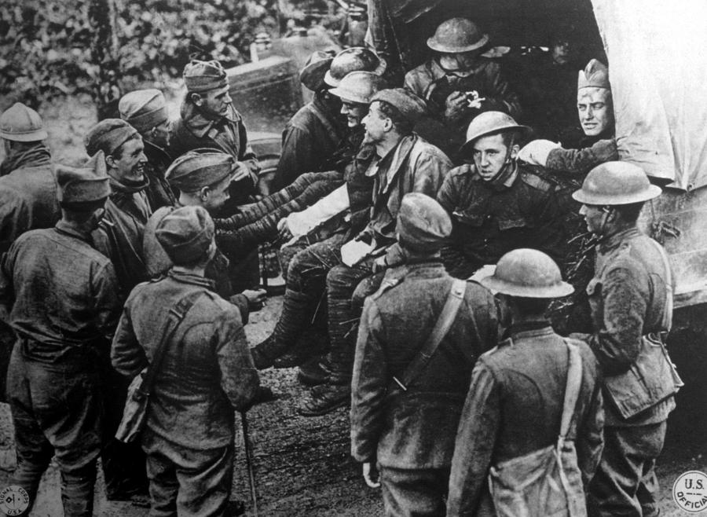
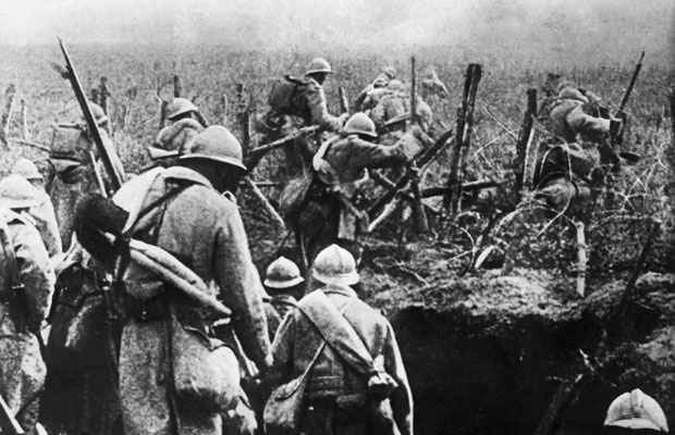
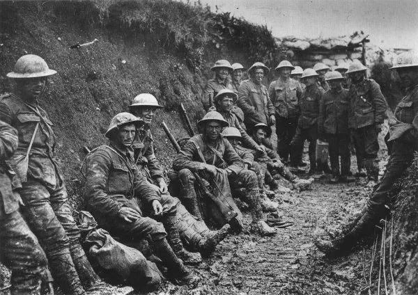

O Desfecho: rumo à Primeira Guerra
Rivalidades imperialistas, nacionalismos e alianças militares aumentam tensões até 1914, quando o atentado de Sarajevo desencadeia a guerra.



1871 — 1914
Rivalidades imperialistas, nacionalismos e alianças militares aumentam tensões até 1914, quando o atentado de Sarajevo desencadeia a guerra.